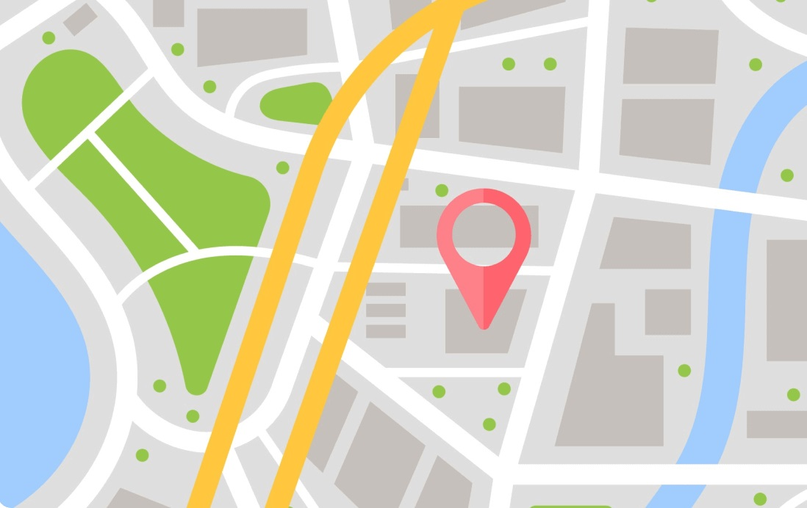

<ion-breadcrumbs >
    <ion-breadcrumb href="/login"> <ion-icon name="home" slot="end"></ion-icon> </ion-breadcrumb>
    <ion-breadcrumb href="/conductor">Conductor</ion-breadcrumb>
    <ion-breadcrumb href="/lista-cli">Lista Clientes</ion-breadcrumb>
    <ion-breadcrumb href="/encuentro">Preparar Viaje</ion-breadcrumb>
</ion-breadcrumbs>

<ion-button color="warning" style="margin-left: 125px; width: 50%; margin-bottom: 80px;" fill="outline" shape="round" (click)="cambiarPagina()">Preparar viaje</ion-button>